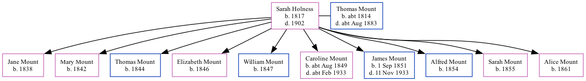

Sarah Harvey Mount (née Holness) 1817 - 1902 [ Home ] | [ Calendar ] | [ Surnames Index ] | [ Family History ]Sarah Holness , the wife of Thomas Mount (the four times great-uncle of Nigel Horne ), was born in Herne, Kent, England in 18171,2 and married Thomas (a labourer with whom she had 10 children: Jane , Mary , Thomas , Elizabeth , William , Caroline , James , Alfred , Sarah Ann and Alice ) at St Martin's Church in Herne on 14 Jul 18383 .
Throughout her life, Sarah lived in several places: at Mortimer Street, Herne Bay, Kent, England on 30 Mar 18515 ; at King Street in Herne Bay on 7 Apr 18611 and on 2 Apr 18714 ; and on Salts Lane in Herne Bay on 3 Apr 18812 .
She died in 1902.
Children Jane was born in 1838Mary was born in 1842Thomas was born in 1844Elizabeth was born in 1846William was born in 1847Caroline was born c. Aug 1849James was born on 1 Sept 1851Alfred was born in 1854Sarah Ann was born in 1855Alice was born in 1861Citations 1861 England, Wales & Scotland Census - Findmypast (was age 42 and the wife of the head of the household) 1881 England, Wales & Scotland Census - Findmypast (was age 64 and the wife of the head of the household) England Marriages 1538-1973 - Findmypast 1871 England, Wales & Scotland Census - Findmypast (was age 52 and the wife of the head of the household) 1851 England, Wales & Scotland Census - Findmypast (was age 31 and the wife of the head of the household) Media 1871 England, Wales & Scotland Census - GBC/1871/0014201273 Family Tree Map
Generated by ged2site . Last updated on Feb 19, 2025